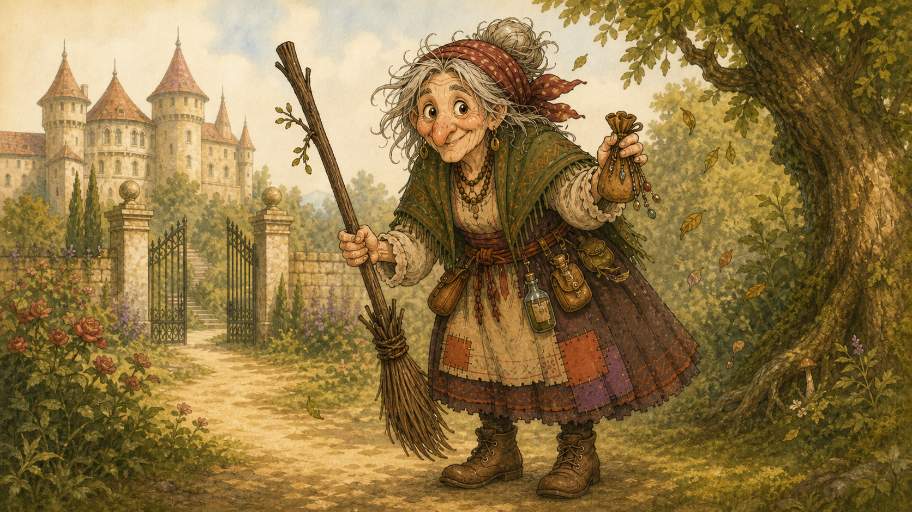

Rozprávka 7
Ako Lada ochorela a Baba Jaga skoro vyhrala preteky

Ako Lada ochorela a Baba Jaga skoro vyhrala preteky Zdroj: Google Drive export, rozprávka 7.
Lada ochorela. Nie tak obyčajne, že si dvakrát kýchla, raz sa zamračila a potom tvrdila, že už je zdravá, lebo na stole videla koláče. Ochorela naozaj. Mala horúce čelo, červený nos, ťažké viečka a hlas, ktorý znel, akoby ho niekto zabalil do vlnenej ponožky. V paláci z toho bol veľký rozruch. Kráľ chodil po chodbe pred jej komnatou a tváril sa, že kráčanie tam a späť je druh liečenia. Kráľovná sedela pri Ladinej posteli, držala ju za ruku a bola pokojná len navonok. To kráľovné vedia. Vnútri sa však bála presne tak ako každá mama, keď jej dieťa leží v posteli a nechce ani svoj obľúbený medový rožok.
Pán doktor prišiel s koženou taškou, okuliarmi na nose a výrazom človeka, ktorý si myslí, že všetky deti by mali ležať, piť čaj a nevymýšľať. Prezrel Lade hrdlo, pozrel jej do očí, počúval jej dýchanie, prikývol a vyhlásil, že princezná musí zostať v posteli.
„Ako dlho?“ spýtala sa Lada.
„Kým nebude zdravá,“ povedal doktor.
To bola odpoveď, ktorú dospelí považujú za úplne jasnú a deti za úplne nepoužiteľnú.
„Môžem aspoň do záhrady?“
„Nie.“
„Na balkón?“
„Nie.“
„K jazierku?“
„Nie.“
„Na zmrzlinu?“
Doktor sa zatváril, akoby sa ho spýtala, či môže jazdiť na koze po kráľovskej jedálni.
„To už vonkoncom nie!“
To bolo asi najhoršie.
Lada nebola len chorá. Bola uväznená v posteli. A čo bolo podľa nej ešte horšie, nebolo jej až tak zle, aby celý deň spala. Bolo jej iba tak zle, že nesmela robiť nič zábavné. To je veľmi nespravodlivý druh choroby.
Na nočnom stolíku ležal plyšový škrečok Omrvinka. Keď ho Lada vzala do ruky, ožil, posadil sa jej na perinu a veľmi vážne sa jej pozrel do očí.
„Vyzeráš ako rožok, ktorý niekto zabudol v parnom hrnci,“ povedal.
Lada sa zachichotala a hneď zakašľala.
Kráľovná sa na ňu pozrela.
„Žiaden smiech, ak z neho kašleš.“
To bola tiež zvláštna dospelá veta. Smiech sa niekedy zakáže práve vtedy, keď je najviac potrebný.
Omrvinka sa uklonil kráľovnej.
„Budem používať len ľahké vtipy.“
Kráľovná si povzdychla, ale dovolila mu zostať. Čarovný škrečok v izbe chorej princeznej bol síce neobvyklý, ale už dávno nie najneobvyklejšia vec, ktorá sa Lade v poslednom čase stala.
Keď kráľovná odišla po čerstvý čaj a doktor si šiel do vedľajšej komnaty zapisovať do zošita, že princezná má ležať, Lada vytiahla spod vankúša ruženín. Bol hladký, ružový a vnútri sa mu mihotalo jemné svetielko. Spievanka jej ho dala s jasnými pravidlami. Nie keď sa nudíš. Ani keď chceš koláč. A už vôbec nie keď chceš, aby za teba niekto upratal bábiky. Iba keď budeš naozaj potrebovať pomoc. Lada ležala, pozerala na ruženín a rozmýšľala. Potrebovala pomoc? Nebola v nebezpečenstve. Nebol tam vlk. Nehoreli záclony. Nikto jej nekradol korunu. Len sa nudila tak veľmi, že aj strop jej začal pripadať príliš rovný.
„Omrvinka,“ zašepkala, „myslíš, že strašná nuda pri chorobe je núdza?“
Škrečok sa vážne zamyslel a pchal si pritom do líca veľký kus rohlíka.
„Ak sa nudíš obyčajne, tak nie. No ak sa nudíš tak, že sa ti myšlienky začínajú hrýzť navzájom, tak to už asi núdza bude,“ zahuhňal.
Lada prikývla. To znelo odborne. Pošúchala ruženín. Ružové svetielko sa rozžiarilo. Vzduch pri posteli sa zavlnil, ako keď sa nad horúcim koláčom mihne vôňa, a zrazu tam stála Spievanka. V jednej labke držala skrutkovač. V druhej pol rozobratého zvončeka. Na hlave mala stužku, o ktorej sa nedalo povedať, či je to ozdoba alebo nehoda.
„Čo sa deje?“ vyhŕkla. „Horíš? Padáš? Uniesli ťa? Rozpadol sa palác?“
Lada sa previnilo usmiala. „Som chorá.“
Spievanka sa zarazila. „Hrozne strašne chorá?“
„Nudím sa.“
Spievanka chvíľu mlčala. Ruženín v Ladinej dlani ešte slabo svietil, akoby tiež čakal, či to je dostatočný dôvod. Spievanka sa zamračila.
„Lada.“
„Ja viem,“ povedala Lada rýchlo. „Sľúbila som, že to použijem len keď ťa budem naozaj potrebovať. Ale pán doktor ma nepustí von. Ani do záhrady. Ani na balkón. Ani na zmrzlinu. A mne nie je ani tak zle, ako sa nudím.“
Spievanka si sadla na okraj postele. To bola vážna veta. Deti jej rozumejú oveľa lepšie než dospelí. Dospelí si totiž pri chorobe často povedia: dobre, budem ležať. Deti si povedia: dobre, budem ležať, ale prečo celý svet medzitým nezastane so mnou?
Spievanka položila Lade labku na ruku.
„Dobre. Toto možno nebola vlčia núdza. Ale chápem, že to je hrozné.“
Omrvinka zdvihol labku.
„A škrečkovi sa už začínali míňať vtipy.“
Spievanka prikývla.
„To je vážne.“
Lenže Lada nevyzerala dobre. Mala horúce líca a pri každom hlbšom nádychu sa jej zachvel hlas. Spievanka síce vedela opraviť zvonček, vymyslieť hračku a rozobrať veci, ktoré sa potom snažila poskladať ešte lepšie, ale choroby neopravovala. Na to bolo treba niekoho, kto pozná bylinky, elixíry a veci, ktoré bublajú v hrncoch. Na to bolo treba Babu Jagu. Spievanka vyskočila.
„Prinesieme ti liek.“
„Od doktora už mám,“ povedala Lada a ukázala na pohár horkého sirupu.
Spievanka k nemu opatrne pričuchla a zatvárila sa, akoby jej prdol do nosa.
„Toto je trest a nie liek.“
Omrvinka sa naklonil k poháru.
„Bŕŕ! Má to vôňu, akoby sa žihľava vydala za cibuľu.“
Lada sa zasmiala a zase zakašľala.
Spievanka sa rozhodla. Vysvetlila Lade, že zostane v posteli, bude piť čaj a tváriť sa pred doktorom pokojne. Ona sa vráti po dráčiky a pôjdu za Babou Jagou. Tá bude vedieť, čo s tým.
„Ale vráť sa rýchlo,“ povedala Lada.
Spievanka prikývla tak vážne, až jej stužka skĺzla na jedno oko.
Ružové svetlo sa zavlnilo a Spievanka zmizla. Na hore sa objavila presne tam, odkiaľ ju ruženín vytrhol: pri svojej čarovnej bedničke, nad rozobratým zvončekom. Zvonček bol stále rozobratý.
Uhlík naň pozeral.
„Ty si zmizla.“
„Lada je chorá.“
Mokroš okamžite vytiahol chvost z bazénika.
„Veľmi?“
„Dosť na doktora. A ešte viac na nudu.“
Poletucha zatvorila knihu tak prudko, až sa z nej zdvihol prach.
„Ideme.“
Mama dračica otvorila jedno oko z pokladu.
„Kam?“
„Za Babou Jagou po liek,“ povedala Spievanka.
Mama dračica sa pozrela na všetkých štyroch. Uhlík už stál pri Ohnivej Strele. Mokroš sa snažil utrieť si mokré labky. Poletucha si brala Vetromilku. Spievanka mala v očiach odhodlanie, ktoré sa veľmi podobalo na paniku, len bolo ružovejšie.
„Liek áno,“ povedala mama. „Závodenie nie.“
Poletucha sa zatvárila urazene.
„Prečo sa pozeráš na mňa?“
Mama dračica zavrela oko.
„Som mama.“
Tým bolo povedané všetko.
Dráčiky vyrazili. Cesta do pralesa bola rýchla, ale nie bezhlavá. Teda, Uhlík tvrdil, že nie je bezhlavá, lebo hlavu mal stále na krku. Mokroš tvrdil, že to nie je dostatočný dôkaz. Poletucha letela nad nimi a kontrolovala chodník. Spievanka šliapala na Pesničke tak, že bicykel hral rýchlu nervóznu melódiu. Nebola to veselá pesnička. Bola to pesnička „ponáhľame sa, ale ešte sme nespadli“.
V pralese bolo vlhko a zeleno. Opice sedeli v korunách stromov a chystali sa hádzať banánové šupky, ale keď zbadali Uhlíkov výraz, rozhodli sa, že dnes si radšej dajú pauzu. Elfovia v stromových domoch si to okamžite všimli a zapísali si dátum, lebo taký deň sa nestával často.
Babina Jagina chalúpka stála na čistinke a z komína sa valil dym, ktorý voňal po mede, materinej dúške a niečom, čo by každý rozumný človek radšej obišiel. Baba Jaga stála pred chalúpkou a miešala v kotlíku. Vedľa nej ležal na stole malý biely zub zabalený vo vreckovke. Mlsandin mlsný zub. A pri ňom rad lesklých cukrových kameňov na paličkách. Dráčiky zoskočili z bicyklov.
„Lada je chorá!“ vyhŕkla Spievanka.
Baba Jaga ani nezdvihla hlavu.
„To viem.“
„Ako?“
„Vietor kašľal smerom od paláca.“
Uhlík sa zamračil.
„Vietor vie kašľať?“
„Keď nesie chorobu, áno. Keď nesie klebety, kýcha.“
Baba Jaga vytiahla z kotlíka dlhú lyžicu a ochutnala.
„Fuj,“ povedala spokojne. „Už je to skoro liek.“
Na stole ležali aj sladké lízacie kamene pre Mlsandu. Neboli obyčajné. Vyzerali ako farebné kamienky z rozprávkového potoka, ale každý bol pripevnený na paličke. Jeden bol červený ako malina, druhý žltý ako med, tretí zelený ako nezrelé jablko a štvrtý zvláštne fialový, čo podľa Baby Jagy znamenalo „nepýtaj sa, líž!“.
„To sú tie kamene?“ spýtal sa Mokroš.
„Pre Mlsandu,“ povedala Baba Jaga. „Tvrdé ako úradnícke srdce, sladké ako prvá výhovorka a bezpečné pre vozy s cukrom.“
Spievanka si jeden prezrela.
„Vyzerá to ako lízatko.“
Baba Jaga sa zamyslela.
„Lízatko?“
„Áno. Lebo sa to líže a je to na paličke.“
Baba Jaga si slovo prehodila v ústach.
„Lí-zat-ko. Hm. Dobré. Zapíšem si.“
A tak sa, aspoň podľa Baby Jagy, zrodili lízatká.
Baba Jaga potom zobrala Mlsandin zub. Bol malý, biely, krivý ako lyžička a trochu sa trblietal. Položila ho do misky, pridala med, usušený kvet lipy, štipku ružového svetla, ktoré Spievanke zostalo na labke po prenesení ruženínom, a tri kvapky čaju, ktorý nikto nevypil dobrovoľne.
„Čo z toho bude?“ spýtal sa Uhlík.
„Pastilka proti nude a chorobe,“ povedala Baba Jaga.
„Pastilka?“ spýtal sa Mokroš.
„Malý liečivý cukrík. Ale nesmiete povedať doktorovi, že je to cukrík, lebo by ho to rozrušilo.“
Zmes v miske začala svietiť. Najprv slabo, potom teplejšie, potom tak, že Omrvinka, keby tam bol, by určite povedal, že to vyzerá ako svetelné zrnko a napchal by si ho do líca. Baba Jaga vytvarovala drobný ružovobiely cukrík v tvare malého zúbka. Potom sa zamračila. Nie nahnevane. Počítavo. To je výraz, ktorý majú dospelí, keď zistia, že jeden koláč nestačí, lebo detí je viac, než čakali.
„Jedna pastilka je málo,“ povedala.
Spievanka zbledla.
„Prečo? Lada je veľmi chorá?“
„Nie. Pretože tu už vo vzduchu cítim preteky.“
Poletucha sa tvárila, že vôbec netuší, o čom je reč. Tvárila sa tak nevinne, až to bolo skoro usvedčujúce. Baba Jaga znovu premiešala svietiacu zmes, pridala ešte štipku lipy, pol kvapky medu a taký malý kúsok trpezlivosti, že by ho väčšina dospelých ani nenašla. Vytvarovala druhú rovnakú pastilku.
„Dve,“ povedala. „Jedna pre rýchlu metlu, jedna pre rýchle krídla.“
„A ktorá je tá pravá?“ spýtal sa Mokroš.
„Obe,“ povedala Baba Jaga. „Lieky nemajú byť ako kráľovské pečate. Nemá byť len jeden a všetci okolo neho panikária.“
Uhlík prikývol.
„To je rozumné.“
„Samozrejme,“ povedala Baba Jaga.
Zabalila jednu pastilku do lístka z mäty a druhú do lístka z medovky. Obe lístky previazal tenký vláknový korienok, aby sa cestou neotvorili.
„Toto zrazí horúčku, osladí hrdlo a na dve hodiny zaženie najhoršiu nudu,“ povedala.
„Len na dve?“ spýtala sa Spievanka.
„Keby som vedela vyrobiť niečo, čo zaženie nudu navždy, predávala by som to kráľom a mala by som chalupu s tromi komínmi.“
Spievanka prikývla. To dávalo zmysel.
Baba Jaga položila jednu pastilku Poletuche do labky a druhú si strčila do malej kapsičky na metle.
„Doručiť rýchlo. Ale opatrne.“
Poletucha sa vystrela.
Baba Jaga sa na ňu pozrela.
Poletucha jej pohľad opätovala.
Medzi nimi sa vo vzduchu objavilo niečo veľmi nebezpečné. Iskrilo to.
„Som rýchlejšia,“ usmiala sa Poletucha.
„To by som netvrdila,“ zvážnela Baba Jaga.
„Chceš si to overiť?“
„A ty?,“ uškrnula sa Baba Jaga.
Uhlík si odkašľal.
„Mama povedala, že nemáme závodiť.“
Poletucha ani Baba Jaga sa naňho nepozreli. To nebolo dobré znamenie.
„Nezávodíme,“ povedala pomaly Poletucha.
„Len rýchlo doručujeme,“ povedala Baba Jaga, nespúšťajúc z Poletuchy zrak.
„Každá s vlastnou pastilkou,“ dodala Poletucha.
Mokroš si povzdychol.
„To vyzerá ako závodenie v kostýme lekárničky.“
Baba Jaga nasadla na metlu. Poletucha vyskočila na Vetromilku, potom sa zamyslela a zosadla.
„Nie. Poletím sama. Je to cez stromy.“
Vetromilka ticho cinkla, akoby si vydýchla.
Spievanka si vzala malú prázdnu krabičku a strčila do nej ešte jeden mätový lístok.
„Ja pôjdem za vami,“ povedala. „Keby jednej z vás pastilka spadla, rozpustila sa, spadla do kríka alebo ju zjedla opica, pozbieram, čo sa dá.“
Baba Jaga prižmúrila oči.
„Múdra Spievanka. Poletucha a ja doručíme. Vy pôjdete ako záloha.“
Poletucha sa usmiala.
„To znamená, že môžeme súťažiť a stále to dáva zmysel.“
Mokroš sa chytil za čelo.
Vyrazili.
Baba Jaga vystrelila na metle ponad čistinku, až okenice na chalúpke zabuchotali. Poletucha vyletela za ňou medzi stromy, zelená ako list, ktorý sa rozhodol porušiť všetky pravidlá aerodynamiky. Uhlík, Mokroš a Spievanka išli po chodníku na bicykloch. Spievanka nemala pastilku, ale išla sústredene, lebo záloha je tá vec, ktorú všetci podceňujú až kým ju zúfalo nepotrebujú. Pesnička jej hrala sústredené fifi-fili-fí. Uhlík išiel vpredu a odhŕňal konáre. Mokroš za ním sústredene triafal kaluže. Nad nimi sa diali preteky.
Baba Jaga letela nízko, potom vysoko, potom príliš nízko, potom cez dieru medzi dvoma stromami, cez ktorú by rozumný človek neposlal ani papierové lietadielko. Poletucha ju dobiehala, klesala, stúpala, robila ostré oblúky a mala výraz niekoho, kto presne vie, že robí niečo zakázané, ale ešte to nebolo pomenované nahlas. Každá mala pri sebe jednu pastilku. Nie aby sa s liekom hazardovalo. Práve naopak. Keby sa jedna z nich zdržala, druhá mohla doručiť liek. To bola veľmi rozumná vec. Bohužiaľ, rozumné veci sa niekedy používajú ako výhovorka na veľmi nerozumné lietanie.
Opice v korunách stromov prestali jesť banány. Elfovia vyšli na mostíky. Jedna víla sa radšej schovala za list.
„Baba Jaga vedie!“ kričala spoza lista.
„Poletucha ju doháňa!“ kričal elf.
„Kto po mne hodil túto šupku?!“ kričal iný elf, lebo život v pralese má viac vrstiev.
Baba Jaga sa obzrela a vyplazila jazyk. Poletucha sa rozosmiala a preletela popod ňu.
„Prvá!“
„Ešte nie si v cieli!“
Tentoraz nebol cieľ starý padnutý strom. Cieľ bola Ladina komnata. Lenže starý padnutý strom pri okraji pralesa bol prvé miesto, kde sa dalo zistiť, kto naozaj vedie. Teda, nikto to oficiálne nepovedal, ale všetci to vedeli, čo je pri detských pretekoch často viac než dosť. Lenže práve pri padnutom strome sa do vzduchu zdvihol kŕdeľ drobných lesných vtákov. Poletucha ich zbadala prvá. Mohla letieť rovno. Získala by náskok. Možno by doručila pastilku prvá. Ale vystrašila by vtáky a možno by do nich vrazila. Spomenula si na Ladu v posteli. Na mamu, ktorá povedala liek áno, závodenie nie. Na pastilku v labke. A na to, že keď nesieš liek, nejde len o to, aby si bol prvý. Ide o to, aby liek aj niekam dorazil. Stočila sa prudko do strany.
Baba Jaga už mala kmeň pred nosom. Stačilo preletieť ponad starý strom, udržať náskok a mohla neskôr vykríknuť, že vyhrala. Lenže tiež uvidela kŕdeľ vtákov, bočiacu Poletuchu a tak vlastnú metlu zabrzdila tak prudko, až starému stromu ofúklo časť kôry. Zastala tesne pred kmeňom. Poletucha pristála na konári o kus ďalej, riadne zadýchaná.
Baba Jaga zakrúžila späť.
„Skoro som vyhrala.“
„Lebo som sa vyhla vtákom.“
„Áno,“ povedala Baba Jaga. „A preto sa to neráta.“
Poletucha na ňu pozrela.
Potom si obe naraz skontrolovali svoje pastilky. Mätový lístok bol celý. Medovkový lístok bol tiež celý.
„Dobre,“ povedala Baba Jaga. „Liek žije. Preteky zomreli.“
„Len na dnes,“ zamrmlala Poletucha.
„Výborne. Trochu mŕtve preteky sú najbezpečnejšie.“
Keď dorazili ostatní, Spievanka bola udychčaná, ale spokojná, lebo nič nemusela zachraňovať.
„Kto vyhral?“ spýtal sa Uhlík.
„Nikto,“ povedala Poletucha, akoby ju to trochu bolelo.
Baba Jaga dodala: „Ja som skoro vyhrala, Poletucha nestratila rozum a obe pastilky sú celé.“
„Takže skoro remíza?“ spýtal sa Mokroš.
„Nie,“ povedali obe naraz.
Do paláca nemohli všetci vtrhnúť cez hlavnú bránu, lebo doktor by dostal záchvat poriadku. A záchvat poriadku je veľmi nepríjemná vec, pri ktorej sa každý začne pýtať, kto má povolenie.
Poletucha a Baba Jaga preto vyleteli k balkónu Ladinej komnaty. Tentoraz už neleteli ako dve besné lastovičky po káve, ale rýchlo a presne. Každá mala jednu pastilku. Spievanka, Uhlík a Mokroš dorazili krátko za nimi po chodníku.
Lada ležala v posteli. Omrvinka sedel na vankúši a rozprával jej o tom, že škrečky by mali mať vlastné kráľovstvo, lebo sú malé, okrúhle a vedia si robiť zásoby. Keď sa pri balkóne objavila Poletucha s mätovým lístkom a za ňou Baba Jaga na metle s medovkovým lístkom, Lada sa rozžiarila tak, že na chvíľu vyzerala zdravšie už len od šťastia.
„Priniesli ste liek?“
„Priniesli sme dva,“ povedala Poletucha.
„Nie preto, aby si zjedla oba,“ dodala Baba Jaga. „Jeden je liek. Druhý je dôkaz, že dnes sme pripravené na všetko.“
Poletucha jej podala mätový lístok s pastilkou.
„Ale nesmieš doktorovi povedať, že je to cukrík.“
Baba Jaga vletela dnu oknom a pristála na koberci.
„Nie cukrík. Pastilka. Veľký rozdiel. Pastilka sa tvári odborne.“
Druhú pastilku položila na nočný stolík.
„Táto je záložná. Keby bola horúčka príliš tvrdohlavá.“
Lada si prvú pastilku vložila do úst. Pastilka chutila po mede, lipe, mäte a niečom sladkom, čo sa ťažko pomenovalo. Trochu ako zmrzlina, ktorá sa naučila liečiť. Hrdlo ju prestalo škriabať skoro hneď. Čelo sa jej ochladilo. A nuda, tá hrozná posteľová nuda, sa stiahla do kúta a tvárila sa, že spí.
„Je mi lepšie,“ povedala Lada.
V tej chvíli vošla do miestnosti kráľovná. Zastala. V izbe bola Lada, Spievanka, Poletucha, Baba Jaga na metle, Omrvinka na vankúši a otvorené balkónové dvere. Kráľovná zavrela oči. Potom ich otvorila.
„Mám sa pýtať?“
Baba Jaga sa uklonila.
„Nie, Vaša Výsosť. To by nás zdržalo.“
Kráľovná sa pozrela na Ladu. Lada mala pokojnejšiu tvár, menej horúce líca a v očiach radosť, ktorá je pri liečení skoro taká dôležitá ako čaj.
„Pomohlo to?“ spýtala sa.
„Áno,“ povedala Lada.
Kráľovná si povzdychla.
„Potom ďakujem.“
Baba Jaga sa zatvárila spokojne.
„Ešte nech leží. Liek lieči, ale posteľ dokončuje prácu.“
To bola veta, ktorú by doktor určite schválil, keby neomdlel pri pohľade na Babu Jagu v detskej izbe.
Spievanka si sadla k Lade na kraj postele. Poletucha sa posadila na okenný rám a tvárila sa, že tam nie je preto, aby mohla hneď vyletieť, keby prišiel doktor. Omrvinka sa postavil na zadné labky a vyhlásil, že chorý človek potrebuje spoločnosť a začal poskakovať na perine. Kráľovná im priniesla čaj, tentoraz taký, ktorý nechutil ako trest.
Lada musela zostať v posteli, ale už v nej nebola sama. Spievanka jej rozprávala o lízankách pre Mlsandu. Poletucha neochotne priznala, že Baba Jaga skoro vyhrala preteky, ale zabrzdila, keď videla vtáky. Baba Jaga tvrdila, že to je najkrajší druh nevyhratých pretekov, aký pozná. Omrvinka sa pokúsil nenápadne priblížiť k záložnej pastilke, ale kráľovná sa naňho pozrela presne tým pohľadom, ktorým mamy zastavujú aj menšie prírodné katastrofy.
Lada počúvala a usmievala sa. Stále bola chorá. Ale už v tom nebola opustená. A to je veľký rozdiel. Večer sa dráčiky vrátili na horu. Baba Jaga odletela do pralesa s tým, že musí skontrolovať lízatká či jej ich opice nepojedli.
Poletucha celú cestu mlčala, čo bolo podozrivé.
Mama dračica čakala pri jaskyni.
„Liek ste doručili?“
„Áno,“ povedala Spievanka.
„Závodili ste?“
Ticho.
Poletucha si odkašľala.
„Trochu.“
Mama dračica otvorila jedno oko.
„Trochu?“
„Veľmi trochu,“ povedal Mokroš.
„S Babou Jagou,“ dodal Uhlík, lebo sa rozhodol, že ak pravda bolí, nech bolí všetkých.
Mama dračica sa pozrela na Poletuchu.
„A?“
Poletucha sklopila krídla.
„Vyhla som sa vtákom, skoro som vyhrala.“
Mama dračica chvíľu mlčala.
Potom povedala: „To bola dobrá prehra.“
Poletucha zdvihla hlavu.
„Naozaj?“
„Áno. Niektoré prehry znamenajú, že si si zapamätala, prečo letíš.“
To bola jedna z tých viet, ktoré znejú jednoducho, ale potom sa v hlave usadia ako kamienok vo vrecku. Malý, ale stále tam. Spievanka si sadla na lavicu a usmiala sa.
„Lade je lepšie.“
Mokroš dodal: „A Baba Jaga vymyslela lízatká.“
Uhlík povedal: „A vyrobila dve pastilky, takže po prvýkrát v dejinách mali preteky aj logistiku.“
Mama dračica sa naňho pozrela.
„Kde si počul slovo logistika?“
„Od kráľovského správcu. Používa ho vždy, keď nevie nájsť vozík.“
Poletucha dodala: „A doktor sa o tom nesmie dozvedieť.“
Mama dračica si ľahla späť na poklad.
„Výborný deň,“ povedala. „Nikto nezomrel, princeznej je lepšie a vymysleli ste sladkosť, ktorá sa tvári ako medicína.“
Dráčiky sa spokojne uložili pod jej krídlo. V paláci Lada zaspávala s Omrvinkou pri vankúši. Horúčka ustupovala, čaj voňal po mede a za oknom bolo ticho. Kráľovná sedela ešte chvíľu pri nej a držala ju za ruku. Lada síce nemohla ísť von. Nemohla na zmrzlinu. Nemohla do záhrady. Ale mala kamarátov, ktorí prišli, keď ich potrebovala. Aj keď to najprv vyzeralo ako totálna nuda. A keď človek musí ležať chorý v posteli, dobrí kamaráti sú niekedy lepší než otvorené dvere. Aj keď otvorené dvere sú tiež veľmi dobré.